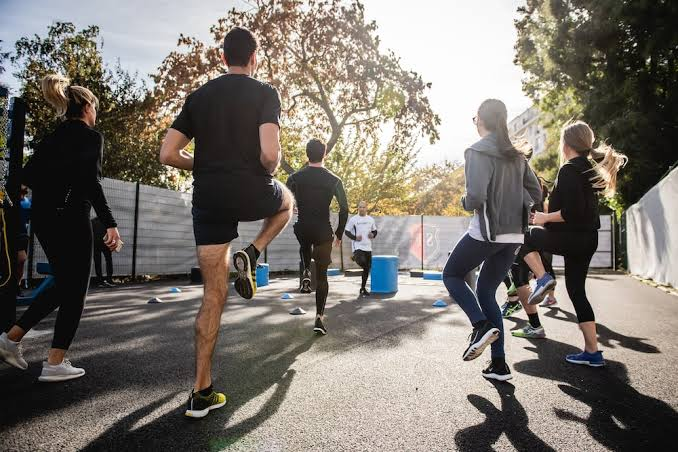

Manfaat Olahraga Bagi Kesehatan Mahasiswa
CNN indonesiaDate 19 JUNE 2023
Terdapat berbagai manfaat olahraga yang dapat ditemukan dalam kehidupan sehari-hari. Tentunya, olahraga yang dilakukan secara optimal, konsisten, dan menyesuaikan dengan kemampuan, dapat memberikan beragam manfaat baik bagi tubuh. Mulai dari memperlancar proses metabolisme, tubuh menjadi lebih bugar, dan dapat mencegah berbagai penyakit.
Olahraga tentunya bermanfaat bagi semua kalangan, baik anak-anak, remaja, dewasa, sampai orang tua. Kebiasaan olahraga yang dibentuk dengan baik akan memberikan dampak baik pula, begitupun pada pelajar maupun mahasiswa.
Manfaat Olahraga Bagi Mahasiswa
Sebagai mahasiswa, tentunya Anda akan disibukkan dengan berbagai aktivitas pembelajaran dan penugasan. Tidak jarang, aktivitas tersebut membuat mahasiswa lebih banyak menghabiskan waktu untuk duduk, tanpa melakukan aktivitas fisik seperti olahraga dalam jangka waktu yang panjang.
Tentunya, hal tersebut akan memberikan dampak negatif bagi kesehatan. Sehingga nantinya, tubuh bisa menjadi kurang prima, dan dapat memberikan gangguan bagi tubuh.
Pada artikel ini, akan dibahas sejumlah manfaat olahraga bagi kesehatan yang diharapkan bisa memotivasi Anda untuk mulai melakukan olahraga. Tentunya, manfaat olahraga ini akan sangat berharga dan berperan bagi kesehatan tubuh Anda. Lantas, seperti apa manfaat olahraga tersebut? Berikut penjelasannya.
Mencegah Obesitas
Asupan makanan yang tidak terkelola dengan baik karena kurangnya aktivitas fisik, dan gizi seimbang. Dapat menyebabkan terjadinya obesitas, atau kenaikan berat badan dengan jumlah yang tidak normal. Maka dari itu, olahraga pun dapat menjadi solusi untuk mencegah penyakit ini.
Karena dengan aktivitas olahraga, kalori dalam tubuh dapat terbakar. Sehingga nantinya tubuh dapat kembali mengelola asupan secara baik dan optimal.